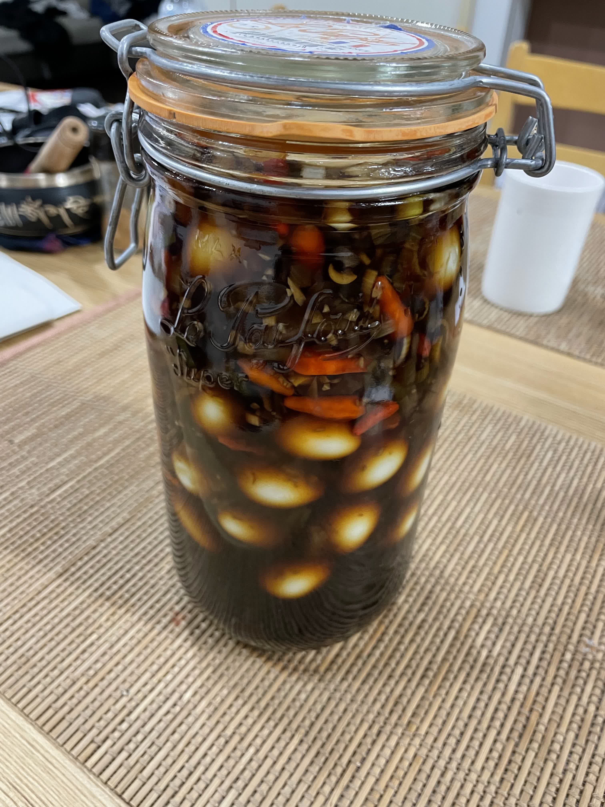

Mayak Gyeran

The dish
Ingredients
I am not adding the exact quantities of each ingredient, I will come back later to add more detail...
or not... so you will have to do a little bit of guess work experiment and adjust to your taste.
Preparation
As for the ingredients, I will only give you some rough description of the preparation, you will have to fill in the gaps. Don't let this discourage you, I promise you this is freaking tasty.
-
Enjoy!